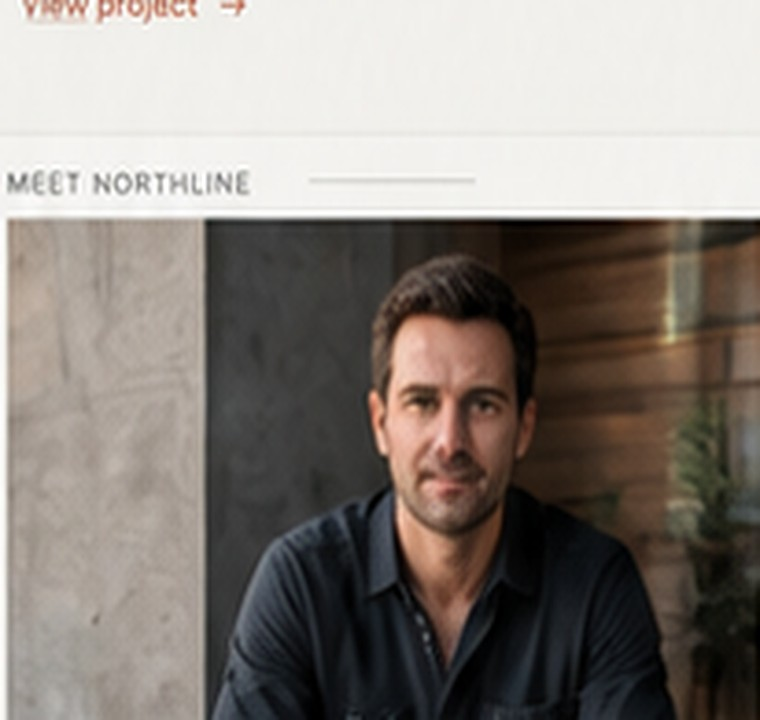

Clarity
Make scope, sequence and next steps understandable.
ABOUT / NORTHLINE
Northline is a fictional construction brand built around clarity, accountability and a more considered client experience.

FOUNDER & PROJECT LEAD
Michael Jacobs is the fictional founder and project lead for this concept brand, representing a simple principle: clients should know who is responsible for their project.
For a real client build, this section would be replaced with the builder’s genuine background, qualifications where relevant, project philosophy and photography.
START A CONVERSATION →WORKING PRINCIPLES
Make scope, sequence and next steps understandable.
Show who owns the conversation and the site.
Use real projects, references and verifiable credentials.
Do not make guarantees the construction process cannot honestly support.
LET'S BUILD TOGETHER
Tell us about your project and start with the right conversation.